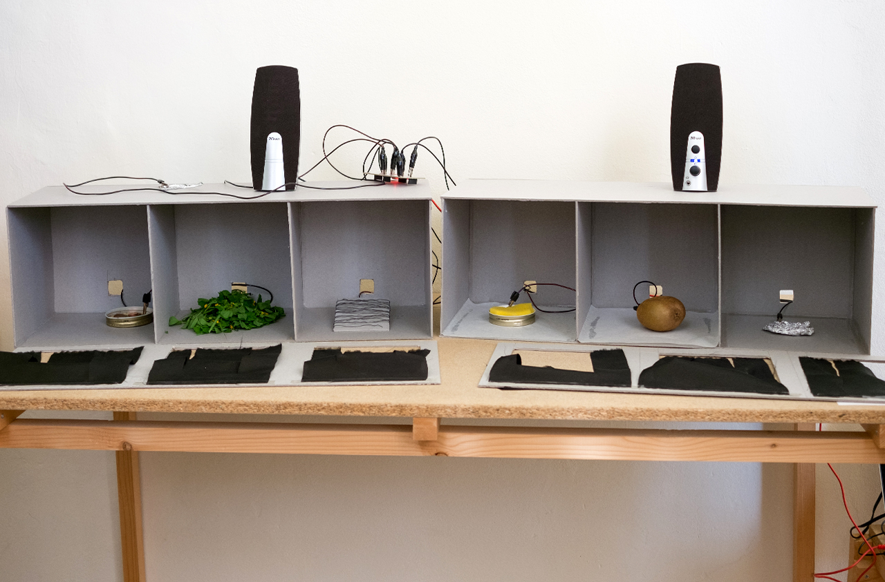

Basic Play
Proposta per una scuola di design
che comincia dall’asilo
ISIA Urbino
29.03—01.04.2017
Workshop con Matteo Loglio
A cura di Lorenzo Bravi
Nel 1974 Bruno Munari scrive per Domus un breve articolo dal titolo “Proposta per una scuola di Design che comincia dall’asilo”, nel quale sottolinea l’importanza di avvicinarsi fin da piccoli all’idea di progetto. In una scuola di progettazione grafica, non si può non notare di come oramai tutti siamo diventati produttori di comunicazione visiva e che mentre l’alfabetizzazione svolta nelle scuole si focalizza sopratutto sul linguaggio verbale, è ancora poca l’attenzione rivolta verso lo sviluppo sensoriale e la comunicazione visiva. Il workshop cerca di interrogarsi su questi temi e capire come oggi, attraverso il gioco e l'uso delle nuove tecnologie, sia possibile stimolare e sviluppare fin da piccoli queste capacità.
progetti
I seguenti progetti sono stati pensati e realizzati in poco più di un giorno e mezzo, dagli studenti del primo anno, Triennio in Progettazione Grafica e Comunicazione Visiva dell’ISIA di Urbino, sotto la guida di Matteo Loglio e Lorenzo Bravi. Per ogni progetto è stato realizzato un prototipo funzionante, utilizzando strumenti di prototipazione tra cui p5.js e MakeyMakey.
Il codice dei progetti è disponibile qui sotto licenza open source.
Hue Play

Hue Play è un gioco per avvicinare i bambini alle proprietà del colore, sviluppando e affinandone la percezione. Il progetto è pensato per due giocatori: vince chi, manipolando la propria tinta si avvicina di più al colore definito dal programma come obiettivo. L’interfaccia a schermo si presenta con due quadrati laterali, uno per ogni giocatore, ed un colore centrale di riferimento, così da permetterne il confronto. L’interazione avviene attraverso tre pulsanti, due per gestire la tinta di ogni giocatore ed un terzo di stop, posto lontano dallo schermo, per introdurre una componente motoria nel gioco. Hue Play è un gioco ideale per tutte le età, che si pone l’obiettivo di sviluppare la propria sensibilità al colore.
Play my look
Play my look è un'applicazione che dà la possibilità ai bambini di giocare con le variabili visive, idee chiave alla base della progettazione grafica. L'interfaccia è molto semplice: al centro dello schermo c'è un poligono; premendo pulsanti fisici appositamente realizzati se ne alterano dimensione, rotazione, tinta e forma. Inoltre, per rendere più coinvolgente l'esperienza, ogni volta che si preme un tasto viene riprodotta una nota la cui durata è pari a quella della pressione. Non ci sono istruzioni né obiettivi: l'idea è che il bambino, interagendo liberamente con le variabili, impari a distinguerle e combinarle.
psychedelic rgb
Psychedelic RGB é uno strumento per disegnare che permette ai bambini di esplorare la sintesi additiva del colore. Solitamente i bambini imparano a mescolare i colori con tempere, matite colorate e dunque sperimentando la sintesi sottrattiva. Psychedelic RGB vuole invece mostrare come veramente si mescolano i colori su uno schermo, in cui la luce è emessa e non riflessa. È da notare come la maggior parte delle applicazioni per disegnare che usiamo su schermo, non sono altro che una simulazione di altri strumenti. Obiettivo dell'applicazione, è quindi, mostrare come effettivamente funzioni l'oggetto su cui si sta disegnando, mostrando, attraverso il gioco, mescolanza ed interazione delle luci rosso, verde e blu.
Scala giochi
Scala giochi è un gioco progettato per introdurre i bambini al concetto di scala, in particolare alle dimensioni relative di un oggetto inserito in un determinato contesto. Partendo da alcune esercitazioni del corso di Basic Design relative alle variazioni di scala, abbiamo deciso di trasferire questi concetti in un gioco interattivo. L'applicazione mostra al bambino un oggetto inserito ogni volta in contesti diversi, potento decidere in maniera libera di ingrandirlo, rimpicciolirlo o riposizionarlo a seconda dei casi. L'obiettivo del gioco è portare a ragionare sul concetto di proporzione e dunque sui rapporti tra gli elementi all’interno di un immagine. Il bambino è libero di sperimentare con le dimensioni, creando sia immagini realistiche che surreali, decontestualizzando o variando visibilemente le dimensioni dell'oggetto rispetto al contesto.
Syn-Memy

Syn-Memy è un gioco pensato per sviluppare la memoria sonora e visiva, con lo scopo di allenare l’orecchio ad identificare e contestualizzare suoni diversi. Il progetto si sviluppa su tre livelli consecutivi, caratterizzati da tre diverse categorie di suoni. Nel primo livello si gioca con i rumori della casa, per poi passare ai fruscii della natura, ed infine ad un livello più astratto, dove i concetti di forma e colore invitano a collegare il suono ad un elemento non figurativo. Syn-Memy permette al bambino di allenare memoria ed udito, collegando tra loro, in un rapporto di sinestesia, il mondo visivo e quello sonoro. Il prototipo è stato sviluppato per dispositivi touch screen, in p5.js
Touch the sound
Touch the Sound vuole introdurre, in maniera interattiva, i bambini al concetto di sinestesia, ossia la capacità di accostare due elementi appartenenti a due sfere sensoriali differenti, in questo caso tatto e udito. Il gioco è composto da una serie di sei scatole chiuse, contenenti oggetti di vari materiali; quando il bambino inserisce la mano nella scatola, toccando un oggetto, un suono viene riprodotto. Il suono vuole evocare una sensazione analoga all'oggetto stesso oppure l’ambiente ad esso collegato. Touch the Sound ha dunque lo scopo di stimolare la curiosità e allenare i bambini a trovare connessioni tra i sensi, in questo caso l’udito e il tatto, spesso considerati secondari rispetto alla vista.
ZOOMZoOM

ZoomZoom è un progetto che intende aiutare i bambini a scoprire il mondo delle texture e stimolarne la loro osservazione. Obiettivo del gioco è mettere in correlazione un dettaglio di un oggetto con l'oggetto stesso. L'interfaccia è composta da dei frutti, che connessi ad una MakeyMakey, fungono da pulsanti per una applicazione che, proprio come un quiz, richiede all'utente di indovinare a quale frutto corrisponda l'immagine macro visualizzata sullo schermo. Una serie di messaggi visivi e sonori saranno i feedback per far capire al giocatore se la sua scelta è stata quella corretta. ZoomZoom vuole abituare il bambino ad una visione più attenta dei dettagli e delle texture in un contesto quotidiano, creando un collegamento fisico tra rappresentazione e realtà, sviluppando e allenando i sensi del tatto e della vista.
team